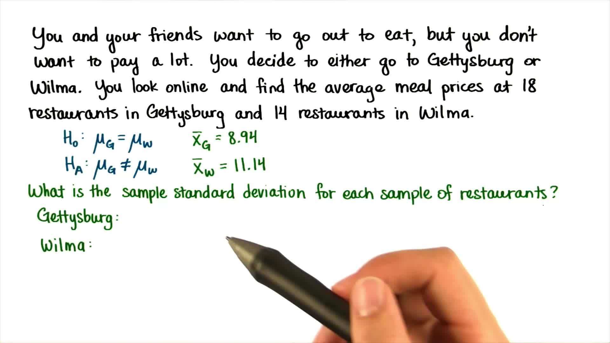

第 11 课：t 检验，第 3 部分
Back to Home
01. 独立样本
02. 标准误差
03. 餐饮价格
04. 平均餐饮价格
05. 餐饮价格标准偏差
06. 餐饮价格 SEM
07. 餐饮价格 t 统计量
08. 计算 t 统计量
09. t 临界值
10. Gettysburg 还是 Wilma？
11. 粉刺药物
12. 粉刺药物 t 统计量
13. 粉刺药物 - t 临界值
14. 粉刺药物 - 决策
15. 谁的鞋子更多？
16. 平均鞋子数量
17. 鞋子 - 标准误差
18. 鞋子 - t 统计量
19. 鞋子 - 决策
20. 鞋子 - 95% 置信区间
21. 鞋子 - 计算置信区间
22. 性别与鞋子
23. 合并方差平方和
24. 计算合并方差
25. 校正的标准误差
26. t 统计量
27. t 临界值和决策
28. 假定
29. 恭喜
Back to Home
05. 餐饮价格标准偏差
餐饮价格标准偏差
Question:
Start Quiz:

Solution:
INSTRUCTOR NOTE:
下载数据：
Gettysburg 和 Wilma 的餐饮价格
。
打开下载好的电子表格进行计算。
Next Concept